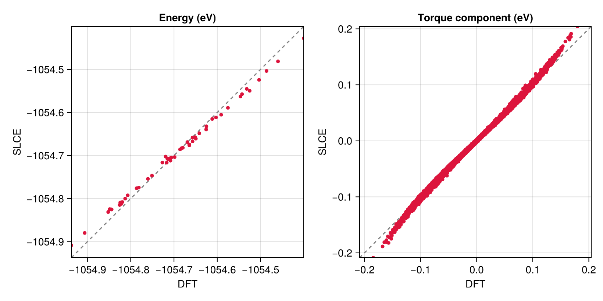
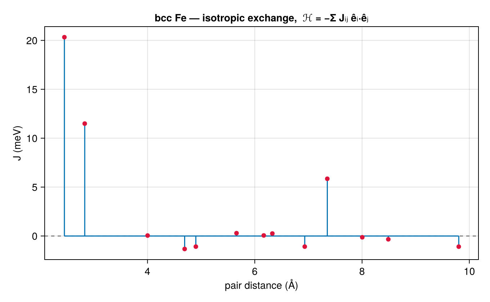
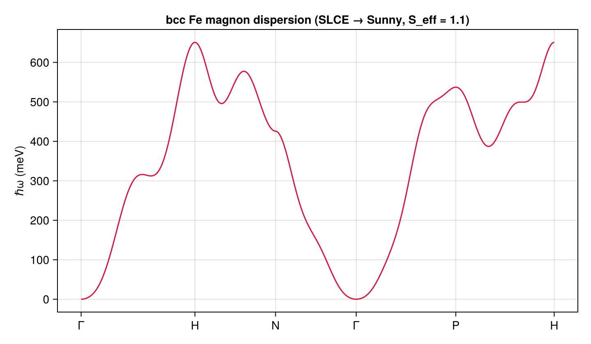
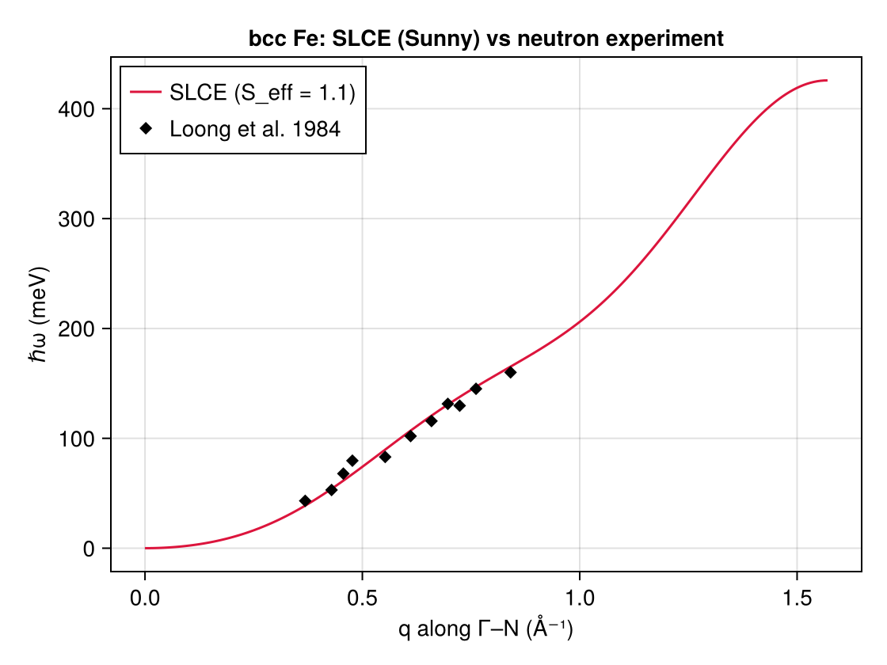

Case 1: bcc Fe
The two previous tutorials fit synthetic data on toy lattices. This one is a real worked example: a spin-cluster expansion for body-centered cubic (bcc) iron, fit against noncollinear spin-DFT energies and torques. It walks the full fitting-core workflow — read the structure and the reference data, build the symmetry-adapted basis, fit, validate, and read the result back out as conventional Heisenberg exchange constants $J_{ij}$.
The data this page ships with — and the upstream VASP/sampling steps that produced it — are described first, then everything from the basis onward runs live.
Overview
The reference system is bcc Fe with conventional lattice constant $a = 2.8298$ Å, in a $4 \times 4 \times 4$ supercell of the conventional (two-atom) cell — 128 atoms. The training data comes from noncollinear spin-DFT in which the direction of each local moment is constrained, so that for an arbitrary spin configuration the calculation returns the total energy and the per-atom constraining field. The energy and the torque $\boldsymbol\tau_a = \boldsymbol m_a \times \boldsymbol B_a$ derived from that field are exactly what the SLCE design matrix is fit against.
The reference data
The training set was generated with VASP, using the constrained-direction (penalty) method: the moment direction on every atom is held fixed while the electronic structure relaxes, and the resulting energy and constraining field are recorded. The directions were drawn from the mean-field thermal distribution at a reduced temperature $\tau = T/T_{\mathrm C}^{\mathrm{MFA}} = 0.05$ (deep in the ferromagnetic regime, small fluctuations about the ground state); 50 configurations were computed.
Writing the constrained-noncollinear VASP inputs, drawing the mean-field configurations, and converting OSZICAR outputs into the EMBSET training file are the job of the companion package SLCETools.jl (SLCETools.VASP for the I/O, its mean-field sampler for the directions). This page is about the fitting core, so it starts from the finished POSCAR and EMBSET and only needs SLCE itself.
Two files ship with the documentation: the structure (POSCAR) and the reference data (EMBSET). The EMBSET holds one block per configuration — a header, the energy (eV), then one row per atom carrying the magnetic moment ($\mu_B$) and the constraining field (eV/$\mu_B$):
# 1, 01.oszicar, energy unit = eV, magmom unit = Bohr magneton, magnetic field unit = eV/Bohr magneton
-1054.62510
1 0.2645553 0.4072013 1.4788146 -3.53630e-02 -6.16490e-02 2.33610e-02
2 -0.1339239 -0.0470085 1.5602266 3.12330e-02 1.61290e-02 3.17940e-03
... (128 atoms)Both formats are simple enough to parse inline. The structure reader returns the lattice, the fractional coordinates, and the per-atom species; the EMBSET reader turns each block into a spin-only TrainingDatum via the spin_datum constructor — the core's neutral training record, which derives the spin direction $\hat{\boldsymbol e}_a = \boldsymbol m_a/\lVert\boldsymbol m_a\rVert$ and the torque $\boldsymbol\tau_a = \boldsymbol m_a \times \boldsymbol B_a$ for you.
using SLCE
import Spglib # activate the SpglibBackend extension
using LinearAlgebra
inputs = joinpath(pkgdir(SLCE), "docs", "src", "tutorials", "case1_inputs")
function read_poscar(path)
lines = readlines(path)
scale = parse(Float64, strip(lines[2]))
A = reduce(hcat, [parse.(Float64, split(strip(lines[i]))) for i in 3:5]) .* scale
counts = parse.(Int, split(strip(lines[7])))
species = String.(split(strip(lines[6])))
nat = sum(counts)
frac = reduce(hcat, [parse.(Float64, split(strip(lines[8 + k]))[1:3]) for k in 1:nat])
kinds = reduce(vcat, [fill(s, c) for (s, c) in enumerate(counts)])
return (; lattice = A, frac, kinds, species, nat)
end
function read_embset(path, nat)
data = TrainingDatum[]
lines = readlines(path)
i = 1
while i <= length(lines)
if !startswith(strip(lines[i]), "#")
i += 1; continue
end
energy = parse(Float64, strip(lines[i + 1]))
moments = Matrix{Float64}(undef, 3, nat)
field = Matrix{Float64}(undef, 3, nat)
for a in 1:nat
v = parse.(Float64, split(strip(lines[i + 1 + a])))
moments[:, a] = v[2:4] # magnetic moment (μ_B)
field[:, a] = v[5:7] # constraining field (eV/μ_B)
end
push!(data, spin_datum(energy, moments, field)) # derives direction + τ = m × B
i += nat + 2
end
return data
end
poscar = read_poscar(joinpath(inputs, "POSCAR"))
data = read_embset(joinpath(inputs, "EMBSET"), poscar.nat)
(n_atoms = poscar.nat, n_configs = length(data))(n_atoms = 128, n_configs = 50)The structure and the basis
Build the crystal from the parsed POSCAR, then the symmetry-adapted SLCE basis. We keep an isotropic two-body model: nbody = 2, all pairs (cutoff = Inf), on-site angular momentum lmax = [1], and soc = false to restrict to the rotationally invariant ($L_f = 0$) channels — i.e. ordinary isotropic exchange. Spglib detects the cubic $Im\bar 3m$ space group, so the thousands of pairs collapse to a handful of invariants.
lattice = Lattice(poscar.lattice)
crystal = Crystal(lattice, poscar.frac, poscar.kinds, poscar.species)
interaction = BasisSpec(; nbody = 2, cutoff = Inf, lmax = [1], soc = false)
basis = SLCEBasis(crystal, interaction; backend = SpglibBackend())
(space_group = basis.spacegroup.symbol, n_salc = n_salcs(basis))(space_group = "Im-3m", n_salc = 13)The 128-atom basis builds in seconds and yields a compact set of distance-shell invariants — each SALC is the symmetrized sum $\sum_{\langle ij\rangle\in\text{shell}}\hat{\boldsymbol e}_i\cdot\hat{\boldsymbol e}_j$ over one neighbor shell.
Fitting
Pair the basis with the reference data to form a dataset — use_torque = true includes the per-atom torques alongside the energies — and fit the coefficients with ordinary least squares. We set torque_weight = 1.0, fitting against the torques (the per-atom energy gradient). The torque directly constrains the energy curvature — and hence the magnon dispersion below — so weighting it is the natural choice when the model's purpose is the spin dynamics; this also matches the reference Magesty.jl tutorial, whose default is a torque fit. (torque_weight interpolates: 0.0 is energy-only — the fit default — and 1.0 is torque-only.)
dataset = SLCEDataset(basis, data; use_torque = true)
f = fit(SLCEFit, dataset, OLS(); torque_weight = 1.0)
(n_coef = length(coef(f)), n_configs = nobs(f))(n_coef = 13, n_configs = 50)Validation
In-sample fit quality: root-mean-square errors on the energy and torque, the energy $R^2$, and the reference energy $j_0$ (the intercept).
using Printf
@printf("RMSE energy : %.2f meV\n", rmse_energy(f) * 1000)
@printf("R^2 energy : %.5f\n", r2_energy(f))
@printf("RMSE torque : %.2f meV\n", rmse_torque(f) * 1000)
@printf("j0 : %.4f eV\n", intercept(f))RMSE energy : 13.79 meV
R^2 energy : 0.98642
RMSE torque : 2.06 meV
j0 : -1029.5406 eVThe torque — the fit's primary target — is reproduced to high accuracy ($R^2_\tau \approx 0.998$), and the energy, now a secondary observable, is captured across the 128-atom cell to $R^2_E \approx 0.986$ — an RMSE of $\approx 14$ meV for the whole cell, i.e. $\approx 0.1$ meV/atom. Parity plots make the agreement visual — observed (DFT) against predicted (SLCE), for both energies and torques:
using CairoMakie
CairoMakie.activate!(type = "png")
E_obs = [d.energy for d in data]
E_pred = predict_energy(f, [d.directions for d in data])
T_obs = reduce(vcat, vec(d.torques) for d in data)
T_pred = reduce(vcat, vec(predict_torque(f, d.directions)) for d in data)
fig = Figure(size = (820, 410))
function parity!(ax, obs, pred)
lo, hi = extrema(vcat(obs, pred))
lines!(ax, [lo, hi], [lo, hi]; color = :gray, linestyle = :dash)
scatter!(ax, obs, pred; color = :crimson, markersize = 7)
xlims!(ax, lo, hi); ylims!(ax, lo, hi)
end
ax1 = Axis(fig[1, 1]; aspect = 1, title = "Energy (eV)",
xlabel = "DFT", ylabel = "SLCE")
ax2 = Axis(fig[1, 2]; aspect = 1, title = "Torque component (eV)",
xlabel = "DFT", ylabel = "SLCE")
parity!(ax1, E_obs, E_pred)
parity!(ax2, T_obs, T_pred)
fig
Exchange interactions
The fitted isotropic couplings are a conventional Heisenberg exchange. bilinear_terms reads the pair channel of the model back out as one $3\times3$ matrix $M$ per (symmetry-distinct) pair; its isotropic part is $\tfrac13\operatorname{tr}M$. We report it in the convention most common in the literature,
\[\mathcal H = -\sum_{i \neq j} J_{ij}\,\hat{\boldsymbol e}_i\cdot\hat{\boldsymbol e}_j ,\]
where a positive $J_{ij}$ favors ferromagnetic alignment. bilinear_terms enumerates each pair once, while the sum above visits every pair twice, so the mapping carries a factor of one half: $J_{ij} = -\tfrac16\operatorname{tr}M$ (the sign flips because the core writes the pair energy as $+\hat{\boldsymbol e}_i\cdot M\,\hat{\boldsymbol e}_j$).
terms = bilinear_terms(f |> SLCEModel)
carts = cartesian_positions(crystal)
A = lattice.vectors
# one (distance, J) per pair, then average within each distance shell
rec = [(norm(carts[:, j] + A * Float64.(R) - carts[:, i]), -tr(M) / 6)
for ((i, j, R), M) in terms.pairs]
sort!(rec, by = first)
function shells(rec)
out = Tuple{Float64,Float64}[]
k = 1
while k <= length(rec)
d0 = rec[k][1]; js = Float64[]
while k <= length(rec) && abs(rec[k][1] - d0) < 1e-3
push!(js, rec[k][2]); k += 1
end
push!(out, (d0, sum(js) / length(js)))
end
return out
end
sh = shells(rec)
fig = Figure(size = (680, 420))
ax = Axis(fig[1, 1]; xlabel = "pair distance (Å)", ylabel = "J (meV)",
title = "bcc Fe — isotropic exchange, ℋ = −Σ Jᵢⱼ êᵢ·êⱼ")
hlines!(ax, [0]; color = :gray, linestyle = :dash)
stem!(ax, first.(sh), last.(sh) .* 1000; color = :crimson, markersize = 9)
fig
The nearest-neighbor coupling dominates at roughly $+20$ meV, the second neighbor is about half that, and the interaction decays and changes sign at larger distance — the hallmark of bcc Fe's ferromagnetic ground state, and consistent in magnitude with published linear-response exchange constants for iron. The longer shells, constrained by only 50 configurations, carry the most fitting noise; a production fit would use more configurations and likely a regularized estimator (see Data and fitting).
Spin-wave dispersion with Sunny.jl
The fitted isotropic exchange maps onto a conventional Heisenberg Hamiltonian, which to_sunny exports to a Sunny.jl System for linear spin-wave theory. The SLCE couplings are fit from unit spin directions, so they absorb the moment magnitude ($J_{\text{SLCE}} = J_{\text{phys}}\,S^2$); the magnon frequency, however, scales as $1/S_{\text{eff}}$, so the export needs the physical effective spin $S_{\text{eff}} = m/(g\mu_B) \approx 2.2/2 = 1.1$ — the full ordered moment that carries the precessing angular momentum (the $\approx 1.5\,\mu_B$ inside the VASP sphere is a projection artifact and would overstate the dispersion).
$S_{\text{eff}} = 1.1$ is not a half-integer, which Sunny's Moment requires. to_sunny handles this automatically with its scaling = :coupling route (the default :auto selects it): Sunny's Moment is held at a placeholder $s_0 = 1$ while $S_{\text{eff}}$ is folded into the couplings, so the magnon dispersion is physical (only the absolute static energy is rescaled, and is unused here).
using Sunny
model = SLCEModel(f)
sys = to_sunny(model; spin_length = 1.1, placement = :primitive) # :auto → :coupling for S_eff = 1.1
Sunny.polarize_spins!(sys, (0, 0, 1)) # ferromagnetic ground state
swt = Sunny.SpinWaveTheory(sys; measure = nothing)The unfolded primitive cell is the 1-atom bcc cell, so its reciprocal basis is not the conventional cube. We give the standard bcc high-symmetry points in Cartesian (units of $2\pi/a$) and convert each to the primitive's reciprocal-lattice units; the dispersion comes out in the energy unit of the couplings (eV), scaled to meV.
recip = 2π * inv(Matrix(sys.crystal.latvecs))' # reciprocal primitive vectors (Å⁻¹)
a = 2.8298
hs = Dict("Γ" => [0, 0, 0], "H" => (2π/a) .* [1, 0, 0],
"N" => (2π/a) .* [1/2, 1/2, 0], "P" => (2π/a) .* [1/2, 1/2, 1/2])
to_rlu(q) = recip \ collect(q) # Cartesian Å⁻¹ → primitive RLU
seq = ["Γ", "H", "N", "Γ", "P", "H"]
path = Sunny.q_space_path(sys.crystal, [to_rlu(hs[s]) for s in seq], 400; labels = seq)
disp = 1000 .* Sunny.dispersion(swt, path) # eV → meV
fig = Figure(size = (720, 420))
ax = Axis(fig[1, 1]; ylabel = "ℏω (meV)", xticks = path.xticks,
title = "bcc Fe magnon dispersion (SLCE → Sunny, S_eff = 1.1)")
for b in axes(disp, 1)
lines!(ax, axes(disp, 2), disp[b, :]; color = :crimson)
end
fig
The dispersion is gapless at $\Gamma$ (the ferromagnetic Goldstone mode) and rises to a few hundred meV at the zone boundary — the characteristic bcc Fe magnon spectrum. As a check against experiment, compare the $\Gamma\text{–}N$ branch to inelastic-neutron measurements[expt] (digitized in febcc_spinwave.csv):
gn = Sunny.q_space_path(sys.crystal, [to_rlu(hs["Γ"]), to_rlu(hs["N"])], 200)
disp_gn = 1000 .* Sunny.dispersion(swt, gn)
q_gn = [norm(recip * collect(q)) for q in gn.qs] # |q| along Γ–N (Å⁻¹)
rows = [split(strip(l, ['', ' ']), ',') for l in eachline(joinpath(inputs, "febcc_spinwave.csv"))
if !isempty(strip(l)) && !startswith(strip(l, ['', ' ']), "#")]
q_exp = [parse(Float64, r[1]) for r in rows]
E_exp = [parse(Float64, r[2]) for r in rows]
fig = Figure(size = (560, 420))
ax = Axis(fig[1, 1]; xlabel = "q along Γ–N (Å⁻¹)", ylabel = "ℏω (meV)",
title = "bcc Fe: SLCE (Sunny) vs neutron experiment")
lines!(ax, q_gn, disp_gn[1, :]; color = :crimson, label = "SLCE (S_eff = 1.1)")
scatter!(ax, q_exp, E_exp; color = :black, marker = :diamond, label = "Loong et al. 1984")
axislegend(ax; position = :lt)
fig
The SLCE branch closely tracks the measured energies along $\Gamma\text{–}N$ — using the physical $S_{\text{eff}} = 1.1$ and the torque-weighted fit (which constrains the energy gradient that sets the dispersion). This reproduces the comparison in the corresponding Magesty.jl tutorial.
Where this generalizes
- Drop
soc = falseto keep the anisotropic ($L_f > 0$) channels — Dzyaloshinskii–Moriya and symmetric-$\Gamma$ bilinears — whichbilinear_termsreturns in the off-diagonal and antisymmetric parts of $M$. - Raise
lmaxto[2]for biquadratic / single-ion channels (the latter appear inbilinear_terms'sonsites). - Raise
nbodyto3for many-body clusters (see the kagome tutorial). - Swap
OLS()for a regularized estimator (see Data and fitting).
- exptExperimental spin-wave energies along $\Gamma\text{–}N$: C.-K. Loong, J. M. Carpenter, J. W. Lynn, R. A. Robinson, and H. A. Mook, "Neutron scattering study of the magnetic excitations in ferromagnetic iron at high energy transfers", J. Appl. Phys. 55, 1895–1897 (1984). DOI: 10.1063/1.333511. The digitized points are in
febcc_spinwave.csv($q$ in Å⁻¹, energy in meV).